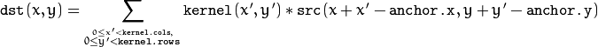

Example
a = imread("/home/Pictures/pic.jpg"); arr = [1 -2 1; 2 -4 2; 1 -2 1]; b=filter2D(a,"CV_8U",arr,-1,-1,0); imshow(b); |  |  |
Convolves an image with the kernel.
output_image = filter2D(input_image,string ddepth, matrix kernel,int anchorX,int anchorY, double delta);
the image matrix on which filter2D has to be applied
desired depth of the destination image. The following types are supported:-
convolution kernel (or rather a correlation kernel), a single-channel floating point matrix
x-coordinate of anchor point. Centre point is denoted by "-1"
y-coordinate of anchor point. Centre point is denoted by "-1"
optional value added to the filtered pixels before storing them
The function applies an arbitrary linear filter to an image. In-place operation is supported. When the aperture is partially outside the image, the function interpolates outlier pixel values according to the specified border mode.
The function does actually compute correlation, not the convolution:

That is, the kernel is not mirrored around the anchor point.
The function uses the DFT-based algorithm in case of sufficiently large kernels (11 x 11 or larger) and the direct algorithm (that uses the engine retrieved by createLinearFilter() ) for small kernels.
a = imread("/home/Pictures/pic.jpg"); arr = [1 -2 1; 2 -4 2; 1 -2 1]; b=filter2D(a,"CV_8U",arr,-1,-1,0); imshow(b); | | |